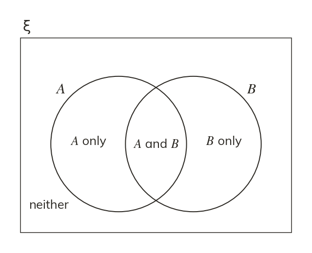
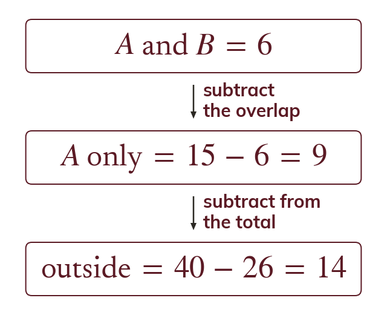
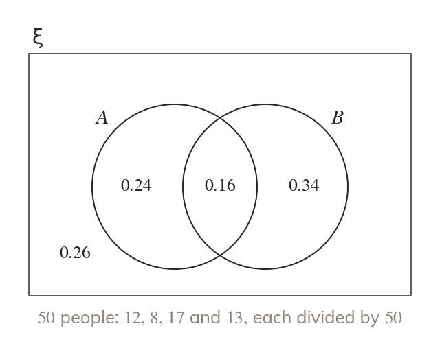
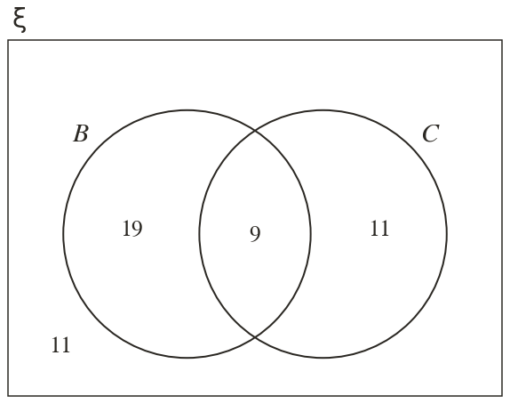
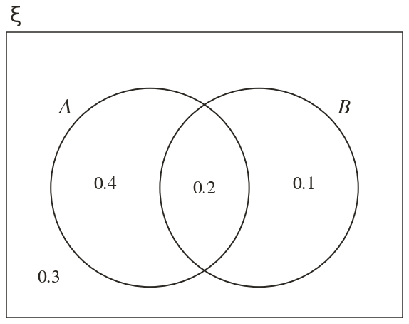
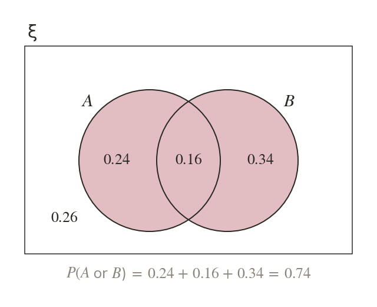
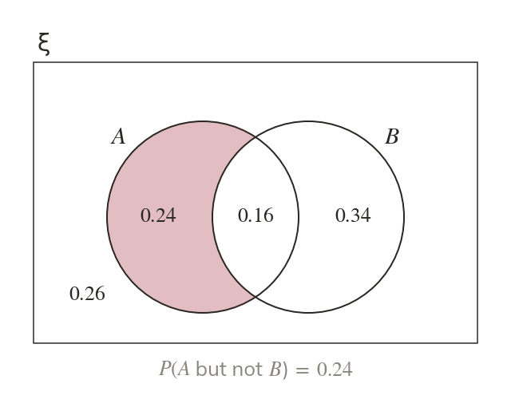
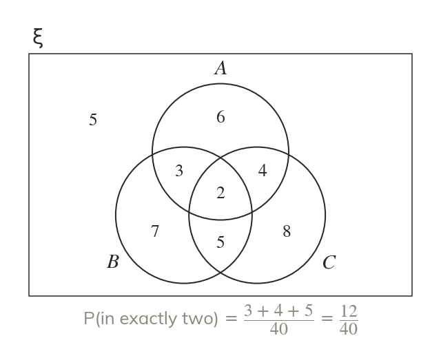
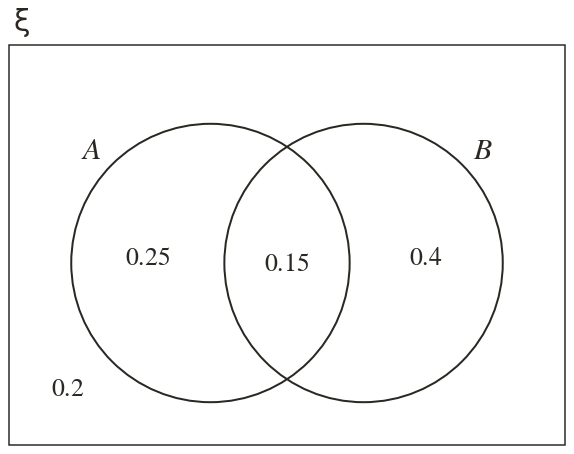
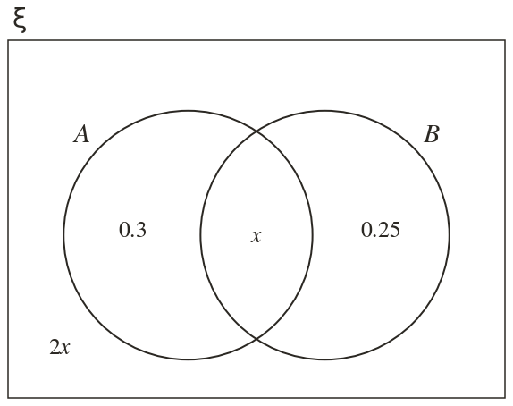

The picture
The rectangle is the sample space and each closed curve is an event. Every outcome sits in exactly one region.
A Venn diagram shows how two or three events overlap, so the probability of a combined event can be read off it. The next lesson uses it to spot events that cannot happen together and events that do not affect each other.
Work down the page at your own pace. Write every answer in your book first, then click to check it.
Read each card, then follow the worked examples one step at a time.

The rectangle is the sample space and each closed curve is an event. Every outcome sits in exactly one region.

Fill the overlap first, then the rest of each curve, then the region outside. The regions add to the total, or to

Divide every region by the total. The probabilities then add to


Pick an answer. If it's wrong, the feedback tells you which mistake it was.
Write the blanks in your book first, then tap each one to check.
Read each card, then follow the worked examples one step at a time.

Add the regions that make up the event. A or B is the three regions inside the curves.

A but not B is the part of outside B. Not is everything outside so P(not

Three curves make eight regions, filled from the centre outwards. Add the regions the event needs.


Pick an answer. If it's wrong, the feedback tells you which mistake it was.
Write the blanks in your book first, then tap each one to check.
Finished? Next lesson: 12.S5.3 Mutually Exclusive and Independent Events.
For each skill, tap the one that is true for you today. Your Revise pages start with anything you mark Not yet.
Your ratings are saved on this device only.
Log in, then search for a code to practise that skill.